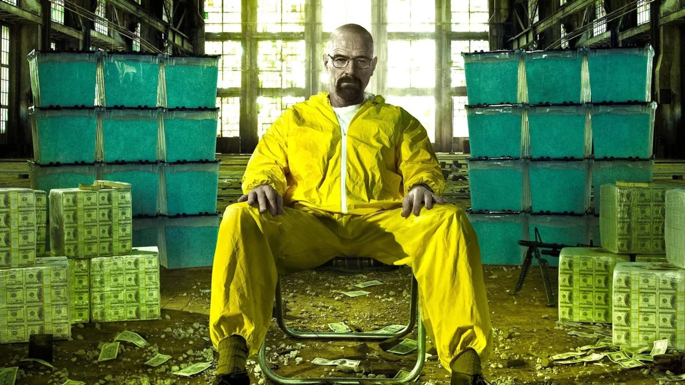
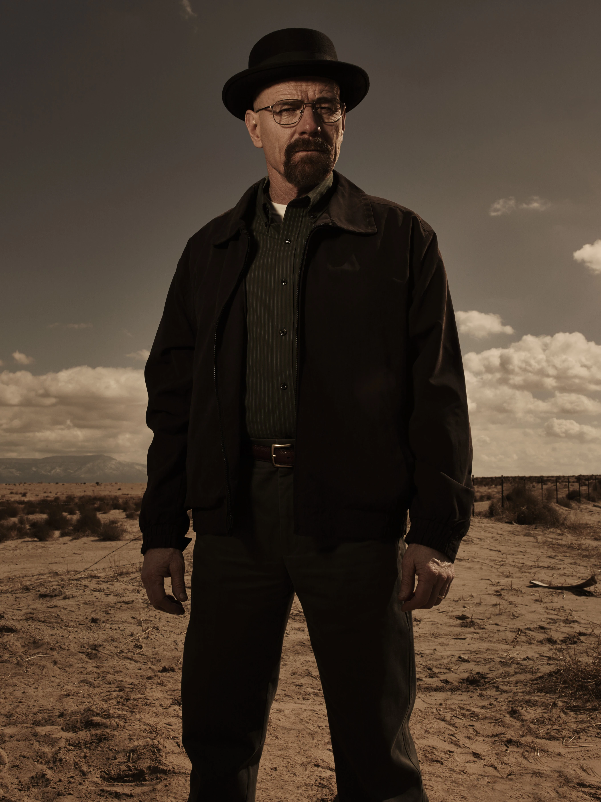
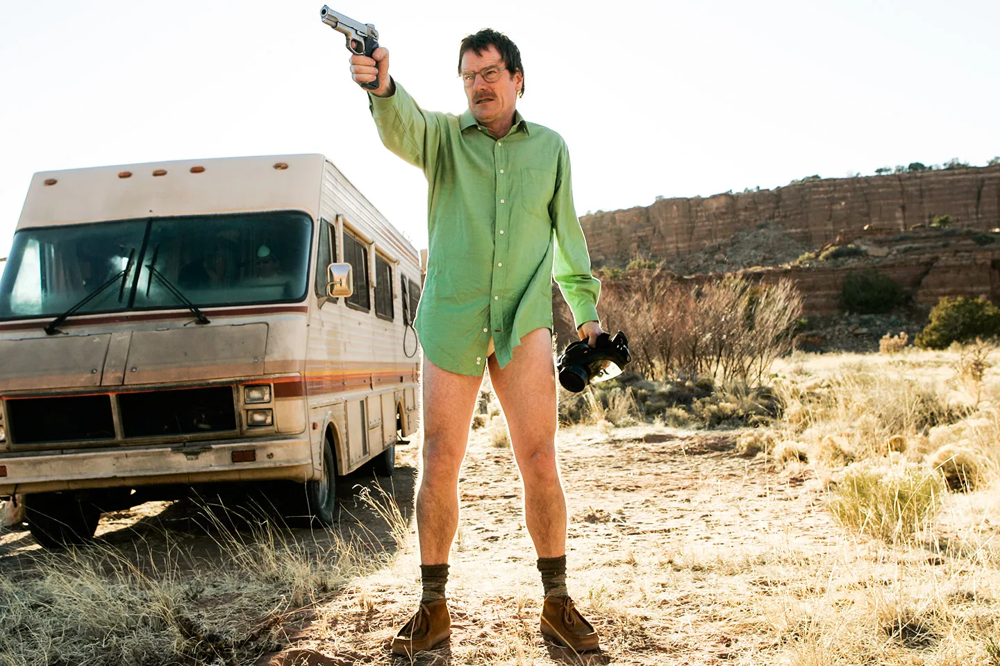

Professor · Químico · Heisenberg
Walter White começa como professor de química do ensino médio em Albuquerque, Novo México — um homem de talento reconhecido, mas de ambições contidas por décadas de escolhas cautelosas. Um diagnóstico inesperado é o estopim que o empurra para fora dessa vida pequena.
O que se segue é a transformação de um homem comum em uma figura que passa a operar sob o pseudônimo de Heisenberg — um nome emprestado da física quântica, sugerindo que, a partir de certo ponto, observar Walter já muda o que ele é.

A identidade de Walter se apoia na ideia de excelência técnica: cada etapa do processo é tratada com o rigor de quem foi, antes de tudo, um cientista. Essa obsessão pela pureza do produto funciona como metáfora — quanto mais ele busca controle absoluto sobre o resultado, menos controle mantém sobre a própria vida.
"Eu fiz isso pela família" é a frase que ele repete — e a que menos resiste ao próprio exame, à medida que a história avança.
Troque os arquivos abaixo pelos nomes das suas próprias imagens.

